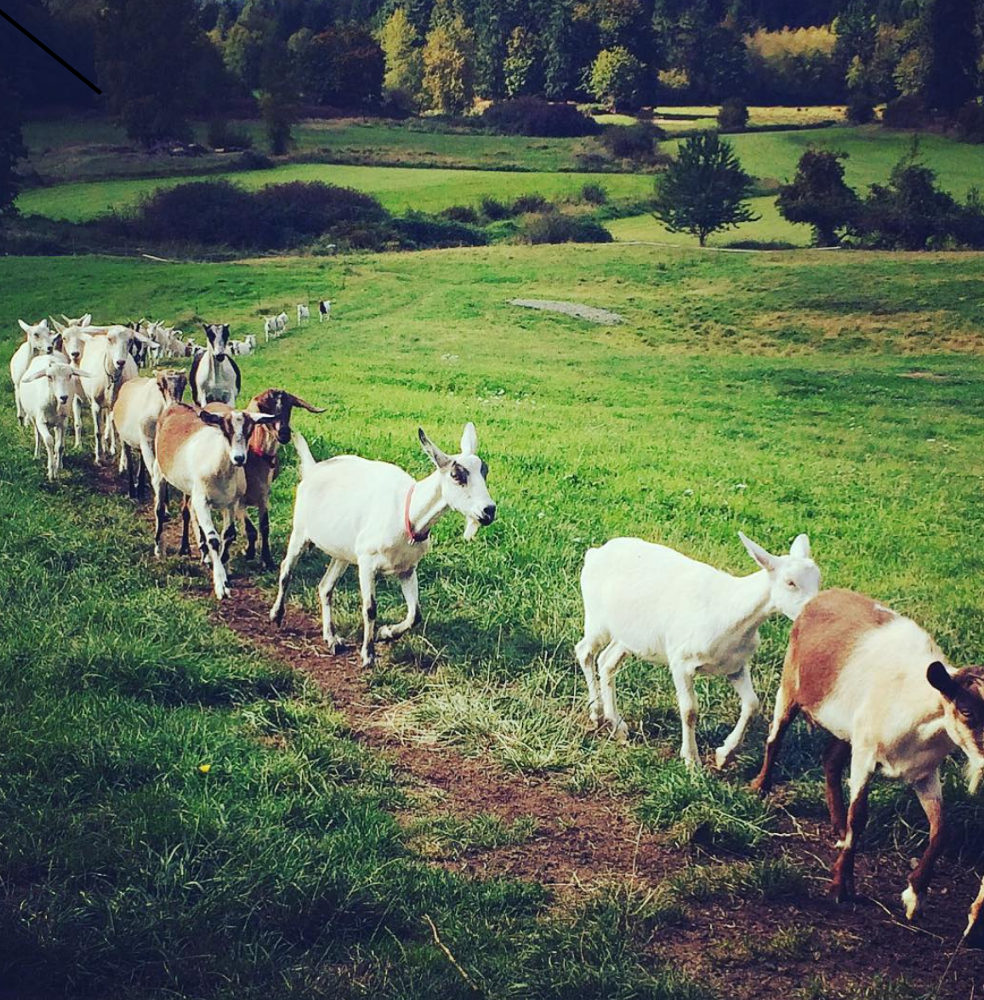
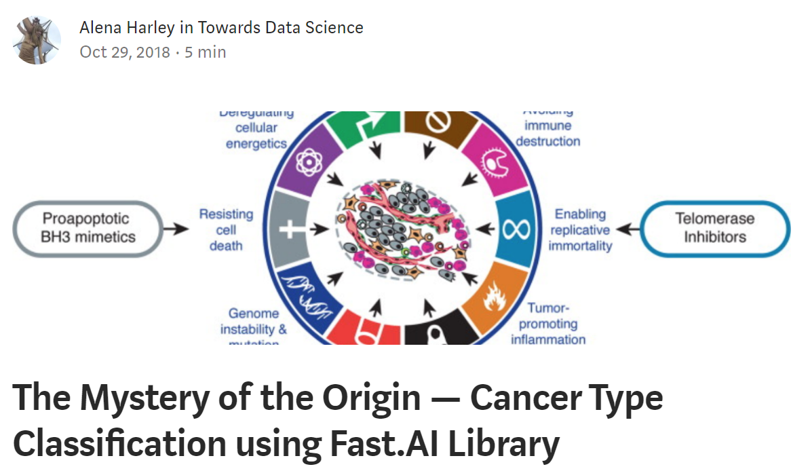
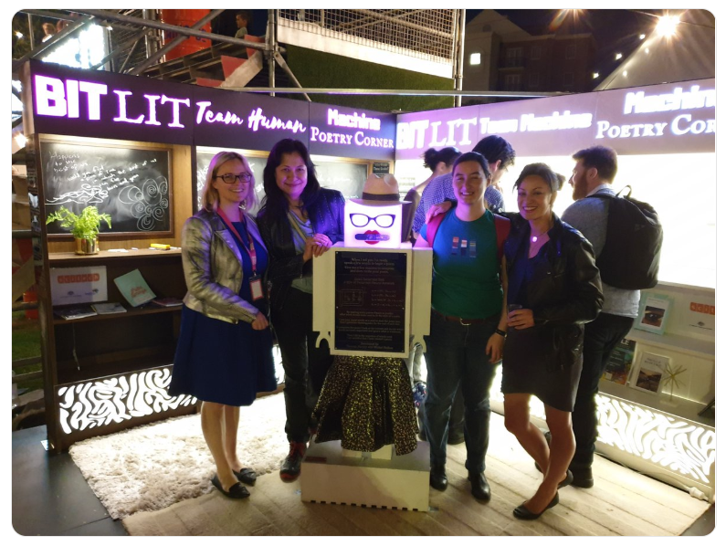
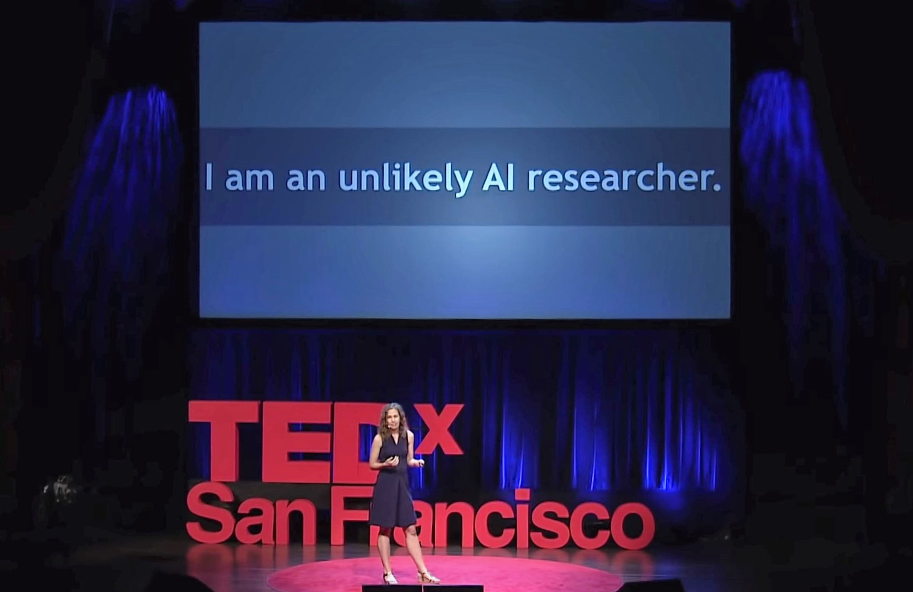

Many people incorrectly assume that AI is only for an elite few– a handful of Silicon Valley computer science prodigies with monthly budgets larger than most people’s lifetime earnings, turning out abstruse academic papers. This couldn’t be more wrong. Deep learning (a powerful type of AI) can, and is, being used by people with varied backgrounds all over the world. A small taste of that variety can be found in the stories shared here: a Canadian dairy farmer trying to identify udder infections in his goats, a Kenyan microbiologist seeking more efficiency in the lab, a former accountant expanding use of solar power in Australia, a 73-year old embarking on a second career, a son of refugees who works in cybersecurity, and a researcher using genomics to improve cancer treatment. Hopefully this may inspire you to apply deep learning to a problem of your own!

Building Tools for Microbiologists in Kenya
Benson Nyabuti Mainye trained as a microbiologist in his home country of Kenya. He noticed that lab scientists can spend up to 5 hours studying a slide through a microscope to try to identify what cell types were in it, and he wanted a faster alternative. Benson created an immune cell classifier to distinguish various immune cells (eosinophils, basophils, monocytes, and lymphocytes) within an image of a blood smear. This fall, he traveled to San Francisco to attend part of the fast.ai course in person at the USF Data Institute (a new session starts next month), and where another fast.ai classmate, Charlie Harrington, helped him deploy the immune cell classifier. Since malaria is one of the top 10 causes of death in Kenya, Benson is currently working with fellow Kenyan and fast.ai alum Gerald Muriuki on a classifier to distinguish different types of mosquitoes to isolate particular types that carry the Plasmodium species (the parasite which causes malaria).
Dairy Goat Farming
Cory Spencer is a dairy goat farmer on bucolic Vancouver Island, and together with his wife owns The Happy Goat Cheese Company. When one of his goats came down with mastitis (an udder infection), Cory was unable to detect it until after the goat had suffered permanent damage. Estimates suggest that mastitis costs the dairy industry billions of dollars each year. By combining a special camera that detects heat (temperatures are higher near an infection) together with deep learning, Cory developed a tool to identify infections far earlier (at a subclinical level) and for one-tenth the cost of existing methods. Next up: Cory is currently building a 3D model to track specific parts of udders in real time, towards the goal of creating an automatic goat milking robot, since as Cory says, “The cow guys already have the fancy robotic tech, but the goat folk are always neglected.”

State-of-the-art Results in Cancer Genomics
Alena Harley is working to use genetic information to improve cancer treatment, in her role as head of machine learning at Human Longevity Institute. While taking the fast.ai course, she achieved state-of-the-art results for identifying the source of origin of metastasized cancer, which is relevant for treatment. She is currently working on accurately identifying somatic variants (genetic mutations that can contribute to cancer), automating what was previously a slow manual process.

From Accountant to Deep Learning Practitioner working on Solar Energy
Sarada Lee was a former accountant looking to transition careers when she began a machine learning meetup in her living room in Perth, Australia, as a way to study the topic. That informal group in Sarada’s living room has now grown into the Perth Machine Learning Meetup, which has over 1,400 members and hosts 6 events per month. Sarada traveled to San Francisco to take the Practical Deep Learning for Coders and Cutting Edge Deep Learning for Coders courses in person at the USF Data Institute, and shared what she learned when she returned back to Perth. Sarada recently won a 5-week long hackathon on the topics of solar panel identification and installation size prediction from aerial images, using U-nets. As a result, she and her team have been pre-qualified to supply data science services to a major utility company, which is working on solar panel adoption for an area the size of UK with over 1.5 million users. Other applications they are working on include electricity network capacity planning, predicting reverse energy flow and safety implications, and monitoring the rapid adoption of solar.

Sarada and the Perth Machine Learning Meetup are continuing their deep learning outreach efforts. Last month, a team led by Lauren Amos created an interactive creative display at the Fringe World Festival to make deep learning more accessible to the general public. This was a comprehensive team effort, and the display included:
- artistic panels design based on style transfer
- GRU/RNN generated poems
- Implemented BERT to generate poems or short books
- Applied speech-to-text and text-to-speech APIs to interact with a poetry-generating robot
Festival attendees were able to enjoy the elegant calligraphy of machine generated poems, read chapters of machine-generated books, and even request a robot to generate poems given a short seed sentence. Over 4,000 poems were generated during the course of the 2-week festival!
Cutting-edge Medical Research at Age 73
At age 73, Dennis Graham is using deep learning to diagnose Parkinson’s disease from Magneto-Encepholo-Graphy (MEG), as part of a UCH-Anschutz Neurology Research center project. Dennis is painfully familiar with Parkinson’s, as his wife has been afflicted with it for the last 25 years. MEG has the advantages of being inexpensive, readily available, and non-intrusive, but previous techniques had not been analytically accurate when evaluating MEG data. For two years, the team struggled, unable to obtain acceptable results using traditional techniques, until Dennis switched to deep learning, applying techniques and code he learned in the fast.ai course. It turns out that the traditional pre-processing was removing essential data that a neural network classifier could effectively and easily use. With deep learning, Dennis is now achieving much higher accuracy on this problem. Despite his successes, it hasn’t all been easy, and Dennis has had to overcome the ageism of the tech industry as he embarked on his second career.
A First-Generation College Student Working in Cybersecurity
Harold Nguyen’s parents arrived in the United States as refugees during the Vietnam War. Harold is a first generation Vietnamese American and the first in his family to attend college. He loved college so much that he went on to obtain a PhD in Particle Physics and now works in cybersecurity. Harold is using deep learning to protect brands from bad actors on social media as part of his work in digital risk for Proofpoint. Based on work he did with fast.ai, he created a model with high accuracy that was deployed to production at his company last month. Earlier during the course, Harold created an audio model to distinguish between the voices of Ben Affleck, Elon Musk, and Joe Rogan.
What problem will you tackle with deep learning?
Are you facing a problem in your field that could be addressed by deep learning? You don’t have to be a math prodigy or have gone to the most prestigious school to become a deep learning practitioner. The only pre-requisite for the fast.ai course (available in-person or online) is one year of coding, yet it teaches you the hands-on practical techniques needed to achieve state-of-the-art results.
I am so proud of what fast.ai students and alums are achieving. As I shared in my TEDx talk, I consider myself an unlikely AI researcher, and my goal is to help as many unlikely people as possible find their way into the field.

Further reading
You may be interested to read about some other fantastic projects from fast.ai students and alumni in these posts:
I look forward to reading your responses. Create a free GitHub account to comment below.